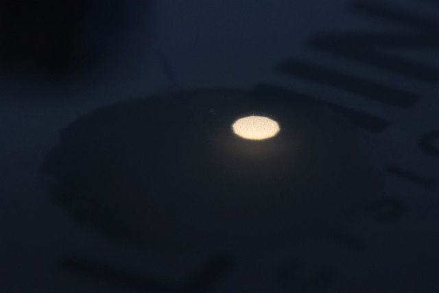
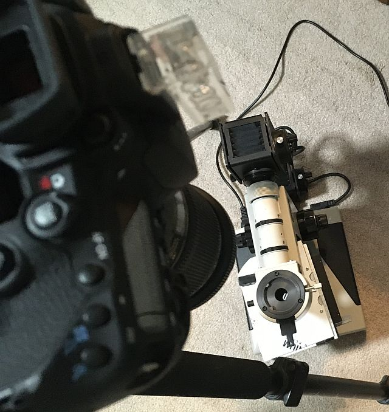
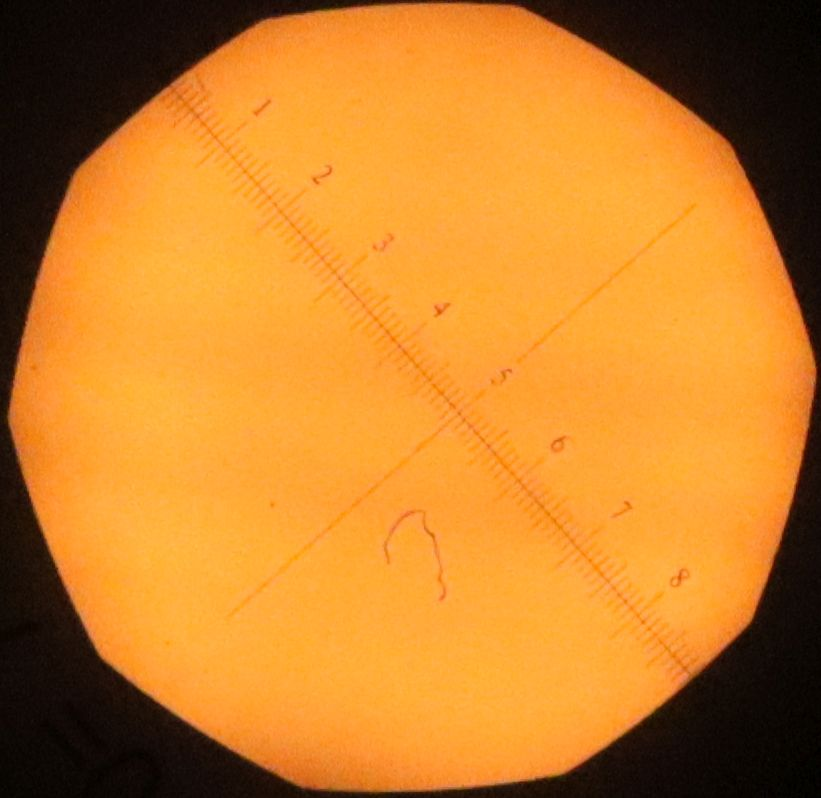
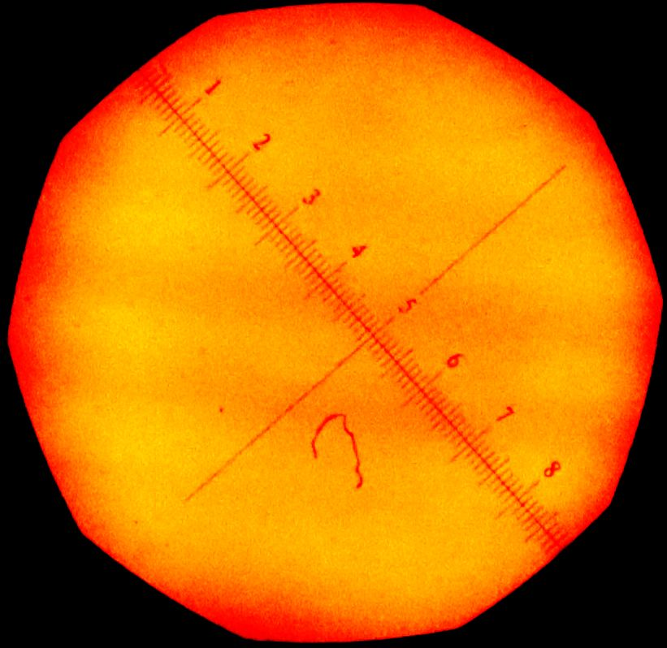
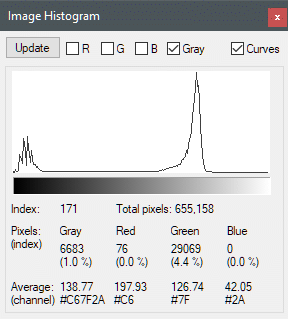
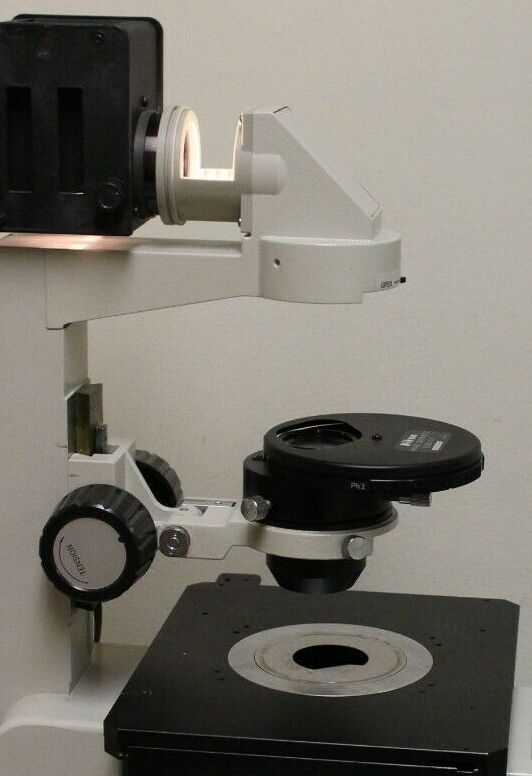
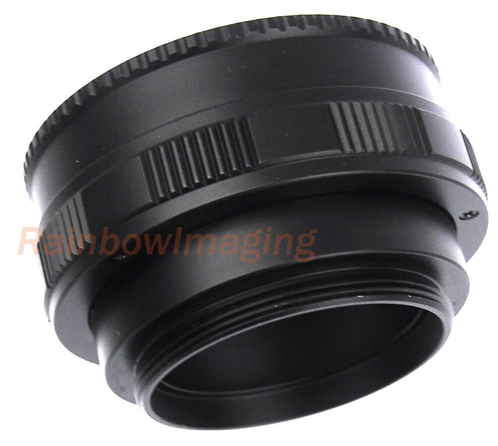

back

Nikon ELWD 0.3 Condenser for Diaphot Microscope
eBay item number: 154904173117
Item specifics
Condition: Used
Seller Notes: You are bidding on a used NIKON ELWD 0.3 Assembly for Diaphot Microscope.
Please email me if you have any questions.
Please take a look at the pics of the actual item(s) you will be receiving.
If it is not pictured that it is not included.
Will ship for free using priority mail or fed ex ground.
Brand: Nikon MPN: ELWD 0.3
Condition:
- used
- pulled from a working environment
- ready to be put to great use
- has scratches - see pics
- overall good cosmetic condition
- no scratches on glass
What you will receive:
- NIKON ELWD 0.3 Assembly for Diaphot Microscope
iris diaphragm
Thread between ELWD condenser lens and dovetail ring has about 46mm (1.8") o.d..
A 37mm iris diaphragm separating them by less than 18mm should fit and still allow field aperture focus.
Useful field
Using a 0.1mm/div calibration slide face down on the stage
(so focused with M Plan 5x thru slide glass),
the field aperture was shut down just enough to focus blades near field periphery viewed with CFWN 10x/20M ocular,
with that diameter measuring about 3.6mm,
corresponding to about 750 pixels in this first macro image before downscaling:

.. which is with face-down calibration slide replaced by face-down ground glass.
Fully opening the field aperture more than fills my approx 24mm improvised stage plate diascopic port:

.. amounting to about 4650 pixels before downsampling.
Attempting uniformity estimate this far off-axis was senseless.
field uniformity
After "eyeballing" thru the photo port for filament alignment and focus,
a Tamron 180mm f/3.5 macro lens was lined up and focused on a calibration slide
thru Optiphot's arm hole with head and objective turret removed:

Turning lamp voltage way down reduced lens flare
so that calibration slide markings are distinguished. This is a 1:1 crop:

.. and with gamma and contrast tweaked to accentuate nonuniformity:

Untweaked image background luminance varies from about 160/255 to 180/255 over the center 70mm diameter:

Phase Contrast
Phase contrast turret inserts between the illumination field lens and ELWD condenser:

To locate the turret beneath Optiphot condenser carrier,
a 52-48mm step-down is screwed in place of field lens ring,
with a 52-42mm helicoid:

.. and a 48-42mm step-down and 48mm extension tube to which turret clamps.